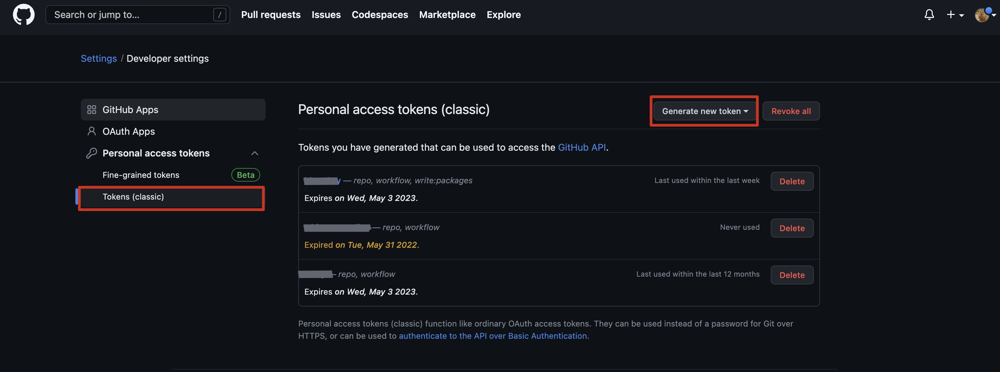
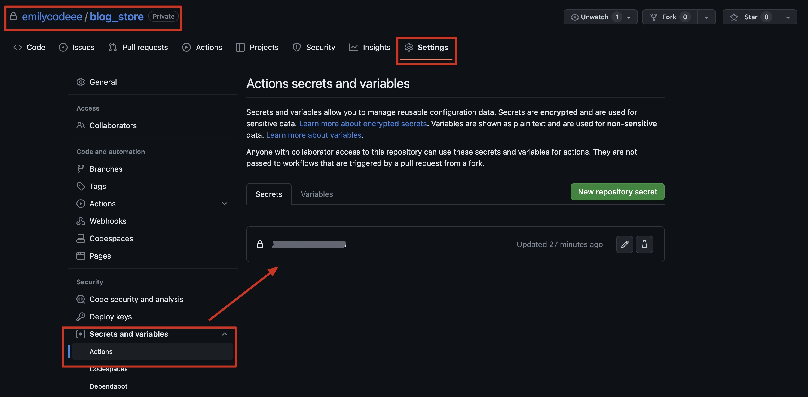
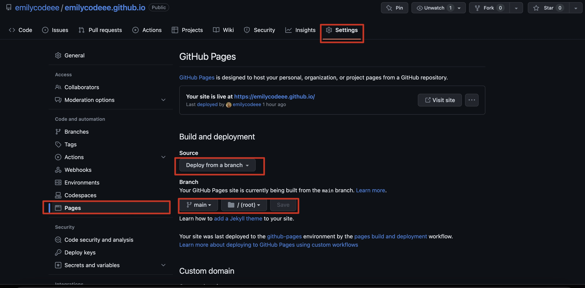

一直盤算了許久要將技術筆記的內容從原本的食旅部落格分離出來，先前使用hexo 但 hexo 一段時間沒用套件要再更新，而 hugo 很棒的一點是因為架構的關係，任何 markdown 的文件都會自動變成一個靜態網頁，讓內容的生成變得非常容易，所以這次就使用 hugo 來建制，從hexo搬遷過來非常無痛。
而這一次也特別嘗試了CICD的自動化部署設定，將程式碼推送至私有庫，再部署至公開庫的github page上，嘗試幾個小時的錯誤，這邊也紀錄下來設置筆記。
首先我們會需要兩個repo，一個私有的repo（用於存放資源程式碼檔案）、一個公開的repo（用於存放hugo指令生成出來的靜態網站資料夾，通常是public）
- Source Repo：存放資源程式碼的私有repo
- Target Repo：部署至GitHub Page的公開repo(xxx.github.io)
首先：創建PAT
PAT(Personal Access Token)
Personal access tokens (PATs) are an alternative to using passwords for authentication to GitHub Enterprise Server when using the GitHub API or the command line.
創建PAT的主要目的主要是給私有repo訪問目標repo的權限，讓私有repo的actions可以將創建好的程式碼推送到目標庫裡。可以參考Github docs
Profile Photo -> Settings -> Developer settings -> Personal access tokens -> Tokens(classic) > Generate new token

其中有兩個一定要勾選的scope權限 workflow 和 write:packages.
並且要注意這個token是一個涵蓋整個帳號使用的token，更好的作法是使用repo庫層級的token-deploy key，方法類似。
在私有repo中設置Secret
在私有repo中設定 > Settings -> Secrets -> Actions -> New repository secret
將剛剛生成的PAT TOKEN黏貼到value，並為此命名個SECRETNAME

私有庫：CICD檔配置-創建workflow
在根目錄下創建一個 .github 資料夾，並在.github 資料夾內部創建 workflows 資料夾，創建一個檔案 hugo.yaml
workflow
- Checkout: 拉取程式碼
- Setup Hugo: 配置Hugo構建環境
- Run Hugo: 構建網站
- Deploy: 用 GitHub Pages Deploy Action 將網站發佈到目標公開
name: Hugo Build & Deploy - Private to Public
on:
push:
branches: [ main ]
jobs:
build:
runs-on: ubuntu-latest
steps:
- name: Checkout
uses: actions/checkout@v2.3.4
with:
persist-credentials: false
# Setup Hugo
- name: Hugo setup
uses: peaceiris/actions-hugo@v2.5.0
with:
hugo-version: 'latest'
# Download (if necessary) and use Hugo extended version. Example: true
extended: false
# Runs Hugo to build the Static Site
- name: Run Hugo
run: |
hugo --verbose
# Deploy the Static Site to Public Repo (GitHub Pages)
- name: Deploy
uses: JamesIves/github-pages-deploy-action@v4.3.3
with:
token: ${{ secrets.SECRETNAME }}
repository-name: XXXX/XXXX.github.io
branch: main # The branch the action should deploy to.
folder: public # The folder the action should deploy.
single-commit: true
commit-message: "Deploy by source"
。branches: [ main ]
action觸發條件，當push到main分支上時觸發。
。token: ${{ secrets.SECRETNAME }}
這裡的SECRETNAME為先前創建好的PAT名稱
。repository-name
xxx/xxx.github.io:要公開部署的repo庫位址，也就是GitHub Page庫的地址
。folder
要傳送至公開庫檔案的檔案路徑
公開庫：設定部署來源
部署設定
設定Page的部署方式是github原先設定的抓取主分支檔案。
而之所以公開庫裡面會被自動寫入檔案，歸功於先前我們在私有庫yaml檔裡設定的指向路徑public檔案夾裡的靜態檔案，在每一次我們push上私有庫後，就會被傳送進來，而之後就會被github的設定自動部署。

流程說明


大提醒
推送前請先下 hugo 指令，依據程式碼生成最新的public，不然可能推好幾百次都覺得內容沒更新，那是當然的，因為public檔案依然是原先的舊檔案。
以上，試了好幾次CICD設定都失敗，後來是找到這篇參考文章，才在嘗試後終於成功，特別感謝前人種樹